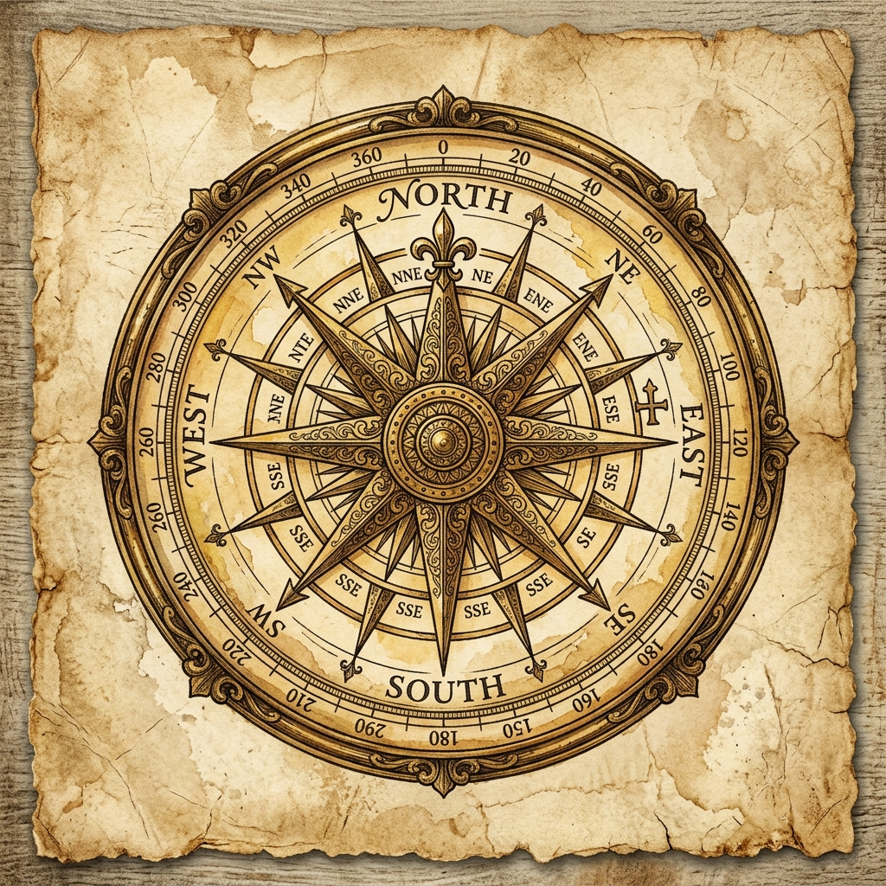
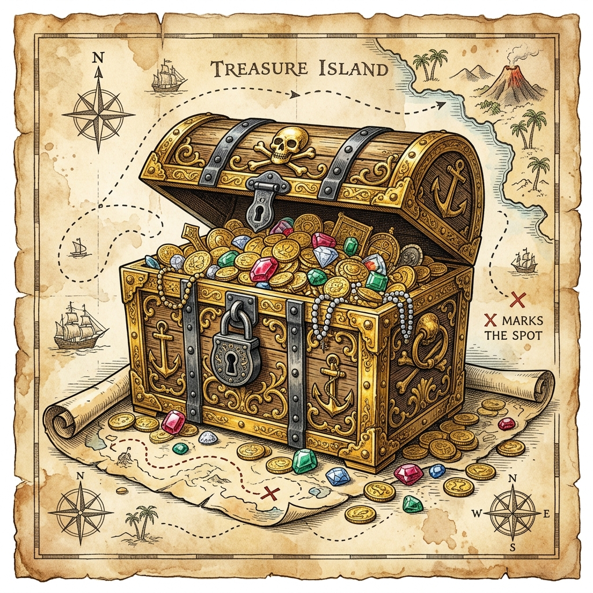

📱
화면을 가로로 돌려주세요!
쾌적한 작도를 위해 가로 모드를 권장합니다
🏴☠️ 보물찾기 작도 게임
STAGE 1 / 6

보물찾기 작도 게임
전설의 해적 보물을 찾기 위해
10개의 작도 미션을 수행하라!
컴퍼스와 자를 사용해 기하학적 작도를 완성하세요.
🗺️ 모험 시작!
⭐⭐⭐
🎉
미션 성공!
정확한 작도입니다!
➡️ 다음 스테이지

보물을 찾았다!
축하합니다! 🎉
10개의 작도 미션을 모두 완료하고
전설의 해적 보물을 발견했습니다!
당신은 진정한 작도 마스터입니다! 🏆
🔄 처음부터 다시
🏝️
해적 섬 상륙
미션 설명
🔧 도구를 선택하세요
🧰 작도 도구
📏
자 (직선)
⭕
컴퍼스
📍
점 찍기
🔄
길이 복사
↩️ 되돌리기
🔄 초기화
✅ 정답 확인